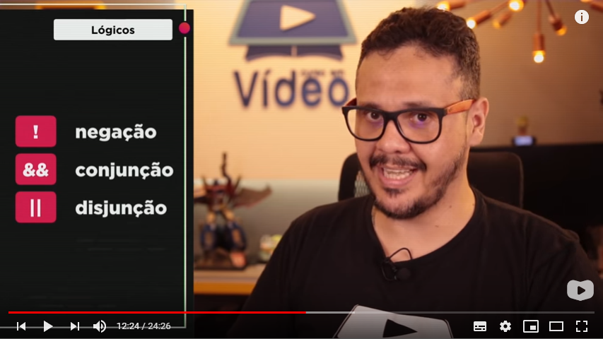

Operadores relacionais, lógicos e ternários.
Operadores Relacionais.
| > | Maior quê |
| < | Menor quê |
| >= | Maior ou igual |
| <= | Menor ou igual |
| == | Igual |
| != | não igual/diferente |
Operador de Identidade ou Operador de Igualdade Restrita.
| === | idêntico |
| !== | Desigual Restrito |
Operadores lógicos.

| ! | Negação |
| && | Conjunção |
| || | Dijunção |
Nota sobre o caracter: "|"
O nome desse caracter é: pipe, e ele pode ser criado com os botões: Shift + \ (barra invertida), ou: Alt + 5555
Ordem de Precedência.

Operadores Ternários.
Vídeo completo da aula: